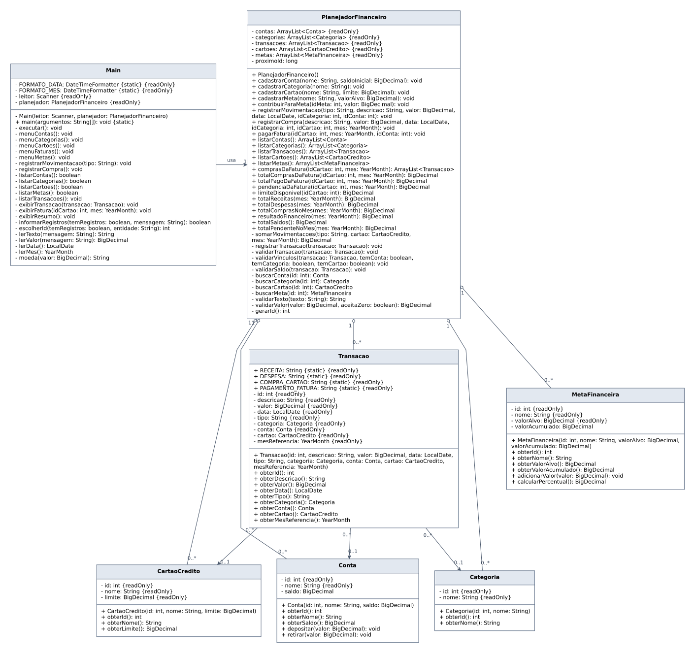

1. Tema escolhido
Planejamento e controle de finanças pessoais.
2. Descrição do problema
Organizar receitas, despesas e compras no cartão de crédito pode ser difícil quando as informações ficam espalhadas. Sem um controle das movimentações, fica mais difícil acompanhar o saldo disponível, pagar faturas e planejar objetivos financeiros.
3. Objetivo do sistema
Desenvolver um sistema em Java que permita cadastrar contas, categorias, cartões e metas financeiras, registrar movimentações e consultar a situação financeira pelo terminal. A proposta é facilitar o controle dos gastos e o acompanhamento das finanças pessoais.
4. Requisitos funcionais
| Código | Requisito | Descrição | Situação |
|---|---|---|---|
| RF01 | Gerenciar contas | Cadastrar contas com nome e saldo inicial e consultar seus saldos. | Implementado |
| RF02 | Registrar receitas e despesas | Registrar movimentações com descrição, valor, data, categoria e conta, além de listar os registros. | Implementado |
| RF03 | Gerenciar categorias | Cadastrar e listar categorias para organizar as movimentações. | Implementado |
| RF04 | Gerenciar cartões | Cadastrar cartões, consultar limites e registrar compras vinculadas ao mês de referência da fatura. | Implementado |
| RF05 | Gerenciar faturas | Consultar compras, total, valor pago e pendência por cartão e mês, e pagar o valor pendente com uma conta cadastrada. | Implementado |
| RF06 | Gerenciar metas | Cadastrar metas com valor-alvo, adicionar contribuições e consultar o percentual acumulado. | Implementado |
| RF07 | Consultar resumo financeiro | Exibir receitas, despesas, compras no cartão, resultado do mês, saldos atuais e faturas pendentes do mês. | Implementado |
| RF08 | Persistir dados | Salvar os cadastros e movimentações em arquivos e recuperá-los ao iniciar o programa novamente. | Pendente |
Na versão atual, os registros são armazenados em listas na memória. Ao fechar o programa, as informações são perdidas. A leitura e a escrita em arquivos ainda precisam ser implementadas.
5. Regras de negócio
- Receitas aumentam o saldo da conta e despesas diretas diminuem o saldo.
- Compras no cartão diminuem o limite disponível, mas não alteram imediatamente o saldo da conta.
- Compras no cartão entram nas despesas do mês de referência informado.
- O pagamento integral da pendência da fatura diminui o saldo da conta e libera o limite do cartão, sem registrar uma segunda despesa.
- O sistema não aceita pagamento de fatura sem valor pendente, despesas acima do saldo ou compras acima do limite.
- As movimentações e contribuições devem ter valor positivo, com até duas casas decimais. O saldo inicial pode ser zero.
- As contribuições para metas atualizam o progresso sem alterar o saldo das contas.
6. Diagrama de classes UML
O sistema possui sete classes. A classe Main controla o menu e utiliza o PlanejadorFinanceiro, que mantém as listas de contas, categorias, transações, cartões e metas. Uma transação pode estar vinculada a uma conta, uma categoria ou um cartão, conforme seu tipo.
O diagrama apresenta os atributos, construtores, métodos e relacionamentos da implementação atual. O sinal + indica acesso público e o sinal − indica acesso privado. As multiplicidades indicam quantos objetos podem participar de cada relacionamento.
Abrir diagrama em tamanho original (SVG)

Conceitos de orientação a objetos
O código utiliza classes e objetos para representar as informações do sistema. O encapsulamento é aplicado por meio de atributos privados e métodos de acesso. A associação entre objetos aparece nos vínculos das transações com as entidades financeiras. A separação de responsabilidades evita concentrar todas as regras de negócio na classe Main.
7. Tecnologias e execução
O programa utiliza Java 21, sem frameworks ou dependências externas. A interface funciona no terminal e a documentação utiliza HTML e CSS.
Com o JDK 21 instalado e configurado no PATH, execute os comandos abaixo na raiz do projeto:
javac -encoding UTF-8 -d out src/*.java
java -cp out MainInforme as datas no formato DD/MM/AAAA, os meses no formato MM/AAAA e valores como 10,50 ou 10.50. Para encerrar, utilize a opção 0 do menu principal.